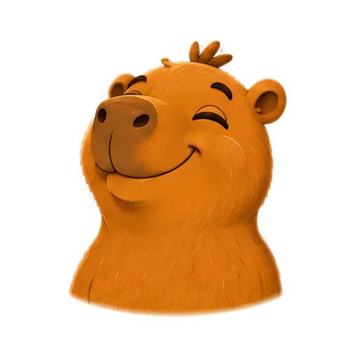

3 vidas · Dicas · 5 segundos
Os biomas dos 26 estados e do Distrito Federal.
27 perguntas · 5 segundos por resposta
SEU GUIA DE JOGO
NESTE NAVEGADOR
Seus melhores resultados.
Ative o JavaScript para jogar.